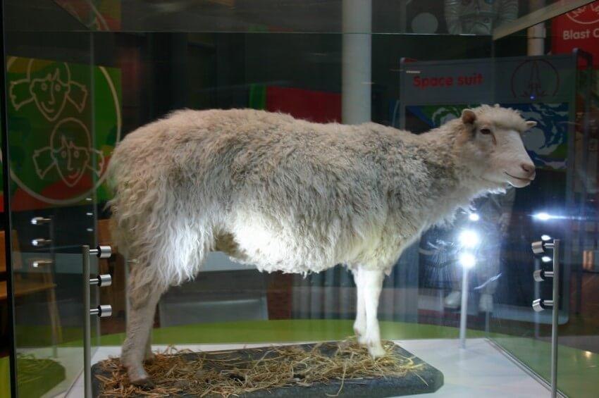

«Πάντα είναι εις την εξουσίαν μου, πλην πάντα δεν συμφέρουσι» (Α’ Κορ. ς’ 12)
Μεγάλη αίσθηση στην παγκόσμια επιστημονική κοινότητα προκάλεσε στις αρχές του έτους η ανακοίνωση του Ινστιτούτου Νευροεπιστήμης της Κινεζικής Ακαδημίας Επιστημών στη Σαγκάη, ότι πραγματοποιήθηκε για πρώτη φορά η κλωνοποίηση δύο μαϊμούδων του γένους μακάκος. Η σπουδαιότητα του επιτεύγματος έγκειται στο ότι για πρώτη φορά κλωνοποιείται ένα είδος ζώου που είναι πρωτεύον θηλαστικό, δηλαδή παρουσιάζει από οργανική άποψη πολλές ομοιότητες με τον άνθρωπο. Κατά δήλωση των ίδιων των ερευνητών χρειάσθηκαν 79 αποτυχημένες προσπάθειες, ωσότου οι επιστήμονες τα καταφέρουν, δηλαδή να έχουν δύο βιώσιμους κλώνους χωρίς εμφανή προβλήματα.
Οι Κινέζοι ερευνητές δήλωσαν ότι δεν σκοπεύουν να επιδιώξουν την κλωνοποίηση ανθρώπων αλλά οι κλωνοποιημένες μαϊμούδες, που είναι γενετικά πανομοιότυπες, θα χρησιμοποιηθούν σε έρευνες για ασθένειες που αφορούν τον άνθρωπο, όπως για παράδειγμα ο καρκίνος. Ήδη όμως εκφράζονται ανησυχίες από άλλους επιστήμονες ότι αφού οι συνάδελφοί τους στη Σαγκάη κατάφεραν να «σπάσουν» το φράγμα των τεχνικών δυσκολιών για την κλωνοποίηση πρωτευόντων, μοιραία ανοίγει ο δρόμος και για τη δημιουργία ανθρώπινων κλώνων. (αναπαραγωγική κλωνοποίηση).
Το θέμα της κλωνοποίησης άρχισε να παίρνει διαστάσεις έπειτα από τη γέννηση του διάσημου προβάτου Ντόλι το 1997 στο Εδιμβούργο της Σκωτίας, που ήταν το πρώτο θηλαστικό που κλωνοποιήθηκε εμφυτεύοντας σε ωάριο πυρήνα από κύτταρα ενήλικου ατόμου. Στο σημείο αυτό να υπενθυμίσουμε ότι μέσα στον πυρήνα κάθε κυττάρου υπάρχει το DNA δηλαδή το γενετικό υλικό μέσα στο οποίο είναι κωδικοποιημένες όλες οι πληροφορίες που αφορούν τη δομή και τη λειτουργία του οργανισμού. Άρα εμφυτεύοντας σε ένα ωάριο (που ο δικός του πυρήνας έχει πρωτύτερα αφαιρεθεί) έναν πυρήνα από κύτταρο άλλου οργανισμού (που περιέχει το DNA εκείνου του οργανισμού) μπορεί να δημιουργηθεί ένα έμβρυο γενετικά πανομοιότυπο με τον οργανισμό αυτό (κλώνος). Εκτενέστερα στο ιστορικό και τις τεχνικές κλωνοποίησης έχουμε αναφερθεί σε παλαιότερα αφιερώματά μας. (ΧΡΙΣΤΙΑΝΙΣΜΟΣ Μάϊος, Ιούνιος, Ιούλιος 2002). Έκτοτε πολλά άλλα θηλαστικά έχουν κλωνοποιηθεί, όπως αγελάδες, χοίροι, κουνέλια, σκύλοι, γάτες και τρωκτικά.
Η αλήθεια είναι ότι τα πράγματα δεν είναι τόσο εξιδανικευμένα όσο παρουσιάζονται. Για παράδειγμα, όσον αφορά την κλωνοποίηση, πετυχαίνουν μόνο οι δύο στις εκατό δοκιμές και κάθε δοκιμή συνοδεύεται από αναγκαστική καταστροφή δεκάδων ή εκατοντάδων εμβρύων τα οποία κρίνονται ακατάλληλα ή δεν κατορθώνουν να επιβιώσουν. Επίσης, ο κλωνοποιημένος οργανισμός παρουσιάζει κατά κανόνα σοβαρά παθολογικά προβλήματα, ενώ η όλη διαδικασία έχει επικίνδυνες παρενέργειες και στους οργανισμούς που κυοφορούν τον κλώνο.
Προσπαθώντας να προσδώσει ρομαντικό κάλυμμα στην αναπαραγωγική κλωνοποίηση ένας γυναικολόγος είπε, ότι «κάθε στείρο ζευγάρι πρέπει να έχει τη δυνατότητα παραγωγής απογόνων». Όμως αυτό δεν είναι σωστό. Κατά τη φυσιολογική σύλληψη και γέννηση τα μισά χρωματοσώματα προέρχονται από τον πατέρα και τα μισά από τη μητέρα. Έτσι το παιδί γεννιέται από το ζευγάρι. Στην κλωνοποίηση όλα τα χρωματοσώματα προέρχονται από το άτομο που επιζητεί την παραγωγή του πιστού αντίγραφού του. Γι’αυτό το λόγο, η αναπαραγωγική κλωνοποίηση δεν είναι θεραπεία της στειρότητας ενός ζεύγους αλλά θυσία στο βωμό του ναρκισσισμού και της αυταρέσκειας του ανθρώπου. Και λέμε ότι πρόκειται για θυσία, διότι η όλη διαδικασία είναι αιματοβαφής. Και συγκεκριμένα, χρειάζονται 400 ωάρια που τα λαμβάνουν από 40 περίπου δότριες γυναίκες (κάθε μία δίνει μέχρι και 15 ωάρια), στις οποίες έχουν δοθεί φάρμακα που διεγείρουν τη γονιμότητα. Από κάθε ωάριο αφαιρείται ο πυρήνας και τοποθετείται κοντά με ένα σωματικό κύτταρο του ατόμου που πρόκειται να κλωνοποιηθεί. Όσα από τα κύτταρα ενεργοποιηθούν και αρχίσουν να διαιρούνται, τοποθετούνται σαν έμβρυα στη μήτρα γυναικών που είναι διαθέσιμες να λειτουργήσουν σαν δανεικές μητέρες. Τα περισσότερα έμβρυα είτε αποβάλλονται αυτόματα ή προκλητά, όταν διαπιστωθεί ότι έχουν μεγάλες συγγενείς ανωμαλίες. Υπολογίζεται ότι χρειάζονται περίπου 50 γυναίκες που θα κυοφορήσουν για να γεννηθεί ένας κλώνος, που μπορεί να είναι υγιής ή μπορεί και να έχει σοβαρές ανωμαλίες, που είτε φαίνονται εξαρχής ή παρουσιάζονται μετέπειτα στην πορεία της ζωής του.
Λαμβάνοντας υπόψη τα ανωτέρω, δεν προκαλεί απορία το γεγονός ότι οι επιτροπές βιοηθικής σε όλες τις χώρες, συμπεριλαμβανομένης της Ελλάδος, προτείνουν την αυστηρή απαγόρευση της αναπαραγωγικής κλωνοποίησης.
Είναι ευνόητες λοιπόν οι συνέπειες που θα είχε η εφαρμογή της κλωνοποίησης στους ανθρώπους, καθώς οι επανειλημμένες δοκιμές με την επακόλουθη καταστροφή εμβρύων, θα απαξίωναν πλήρως την ανθρώπινη ύπαρξη καθιστώντας τον άνθρωπο ένα αναλώσιμο πειραματόζωο που ανεμπόδιστα αντιγράφεται και καταστρέφεται μέχρι να επιτευχθεί το “επιθυμητό αποτέλεσμα”.
Για τον Πατέρα Θεό όμως ο κάθε άνθρωπος είναι μοναδικός και πολύτιμος και αυτή η αγάπη είναι που οδήγησε τον Υιό του Θεού στη σταυρική θυσία για να χαρίσει στον άνθρωπο την «ανεκδιήγητη αυτού δωρέα» (Β΄ Κορινθ. θ:15).
«Διότι τόσον ηγάπησεν ο Θεός τον κόσμον, ώστε έδωκε τον Υιόν αυτού τον μονογενή, διά να μη απολεσθή πας ο πιστεύων εις αυτόν, αλλά να έχη ζωήν αιώνιον» (Ιωάννη γ:16).
«Διότι το πολίτευμα ημών είναι εν ουρανοίς, οπόθεν και προσμένομεν Σωτήρα τον Κύριον Ιησούν Χριστόν, όστις θέλει μετασχηματίσει το σώμα της ταπεινώσεως ημών, ώστε να γείνη σύμμορφον με το σώμα της δόξης αυτού κατά την ενέργειαν, διά της οποίας δύναται και να υποτάξη τα πάντα εις εαυτόν.» (Φιλιπ. γ:20-21)
Η ομάδα «Χριστιανισμός & Επιστήμη»
Published in the team's column in the newspaper “Christianity”, .